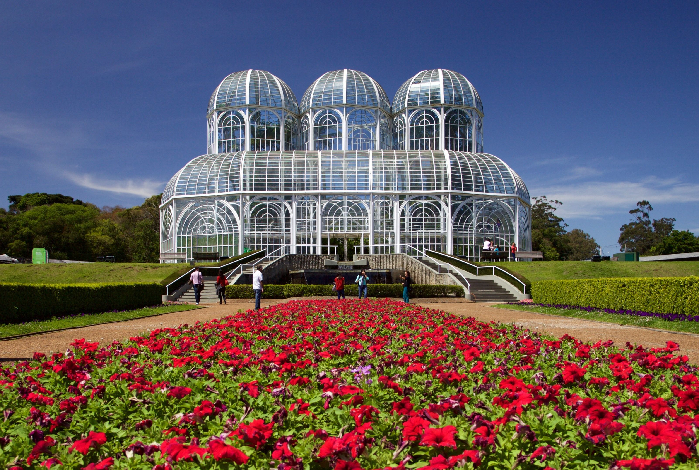
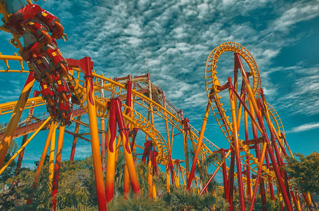
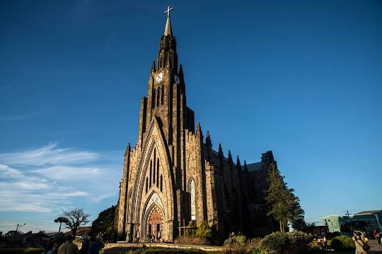

Jardim Botânico de Curitiba
O Jardim Botânico de Curitiba, ou Jardim Botânico Francisca Richbieter, é um dos principais pontos turísticos da cidade de Curitiba, capital do estado brasileiro do Paraná. Localiza-se no bairro Jardim Botânico. Em 2007 foi o monumento mais votado numa eleição para escolha das Sete Maravilhas do Brasil, promovido pelo site Mapa-Mundi.
Beto Carrero
Beto Carrero World é um parque temático localizado no litoral norte do estado de Santa Catarina, Brasil. Inaugurado no dia 28 de dezembro de 1991, pelo seu idealizador João Batista Sérgio Murad, artisticamente conhecido como Beto Carrero, o parque foi desenvolvido em uma área de 14 quilômetros quadrados.
Igreja Matriz Nossa Senhora de Lourdes
A Igreja Matriz de Nossa Senhora de Lourdes é uma igreja católica localizada na Praça da Matriz, no município brasileiro de Canela, no estado do Rio Grande do Sul. É conhecida popularmente como Catedral de Pedra, embora na verdade, não seja uma catedral. É um dos principais pontos turísticos da cidade e da Serra Gaúcha.